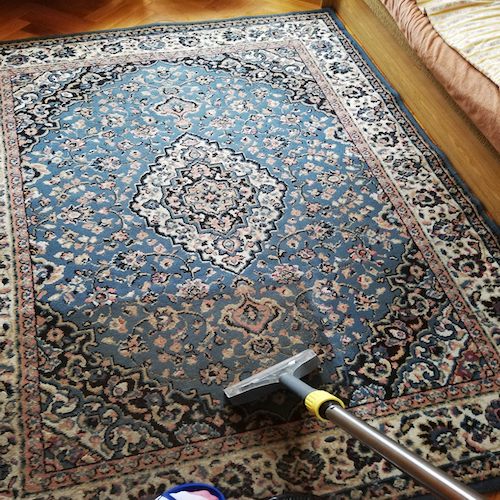
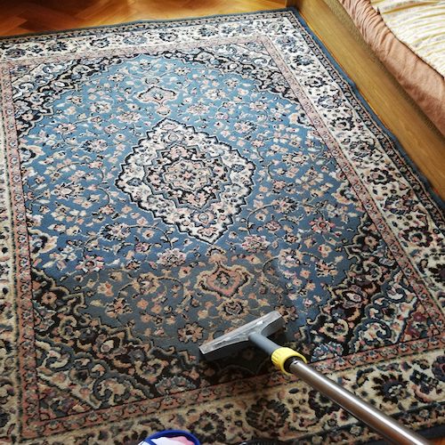

O nás
čištění koberců a sedacích souprav
Jsme firma, který se zabývá profesionálním čištěním koberců, sedacích souprav, tvrdých podlah a ostatního čaloněného nábytku více než 10 let.
Používáme nejvýkonnější řady profesionálních strojů značek Santoemma a Karcher
Máme od každé značky strojů několik, proto jsme schopni vyčistit jekékoliv množství koberců v krátké době a v té nejvyšší kvalitě
Poskytujeme naše služny jak v domácnostech, tak i ve firmách
Novinka!!!
Provádíme speciální horkovzdušnou dezinfekci - sterilizaci matrací, lůžkovin a textílií. ODSTRANÍME 99,9% VIRŮ A BAKTERIÍ
Domácí prach, roztoče a jejich výkaly odstraňujeme patentovaným systémem čištění,
který používá UVC lékařskou sterilizační lampu, suchou horkovzdušnou sterilizaci,
speciální pulzní kartáč a výkonné sání s dokonalou HEPA filtrací PureAir.
ceník
| služba | jednotka | cena |
|---|---|---|
| koberce do 10 m2 | 600,- | |
| koberce do 30 m2 | 700,- | |
| koberce nad 30 m2 | m2 | 20,- |
| sedací souprava - 1 místo | ks | 100,- |
| křeslo celočalouněné | ks | 150,- |
| matrace jednolůžko | ks | 200,- |
| matrace dvoulůžko | ks | 400,- |
| lůžko celočalouněné | ks | 300,- |
| letiště | ks | 550,- |
Fotogalerie
 

metody
Provádíme
čištění koberců, sedacích souprav a čalouněného nábytku
čištění vlněných koberců a textilních rohoží a rohožek
strojové čištění tvrdých podlah
čištění PVC linea a linolea
dezinfekci - sterilizaci matrací a lůžkovin
impregnaci koberců a čalouněného nábytku
metody čištění
1. Extrakční čištění koberců mokrou cestou
2. Kartáčová metoda čištění koberců rotačním kartáčem
Ústecký kraj
1. Ústí nad Labem
2. Teplice
3. Děčín
4. Lovosice
5. Litoměřice
a okolí